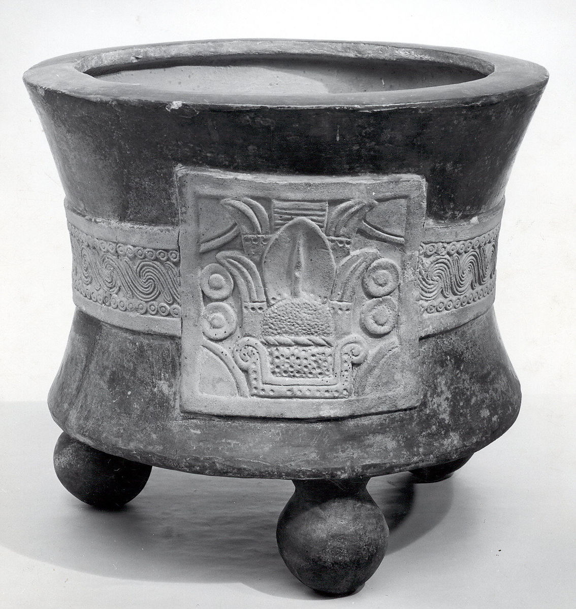

-

- 
Tripod Vessel with Date Glyph
15th–early 16th century
The hourglass shape of this sizable vessel is reminiscent of the form of ceremonial braziers that were closely linked to the religious architecture in the Aztec capital Tenochtitlan. The thick-walled, heavy vessel is supported by three hollow, bulbous feet containing clappers, which produced sounds when the vessel was moved. The middle of the vessel is encircled by a broad band decorated with interlocked scrolls framed by circles. On the front is a cartouche containing the date glyph "4 Reed," which possibly refers to the year 1431 A.D., during which the third enlargement of the Main Temple at Tenochtitlan was celebrated. The band and cartouche were made in molds, as evidenced by multiple seams, and have the natural clay color in which the rest of the vessel is covered, with reddish-brown burnished slip.
Ceramic braziers, often bearing deity images, some reaching three feet in height, were placed outside temples or in front of altars. Offerings of human and animal remains as well as aromatic incense of balls of latex, were burnt in them. The rising smoke was believed to carry the offerings to the gods.